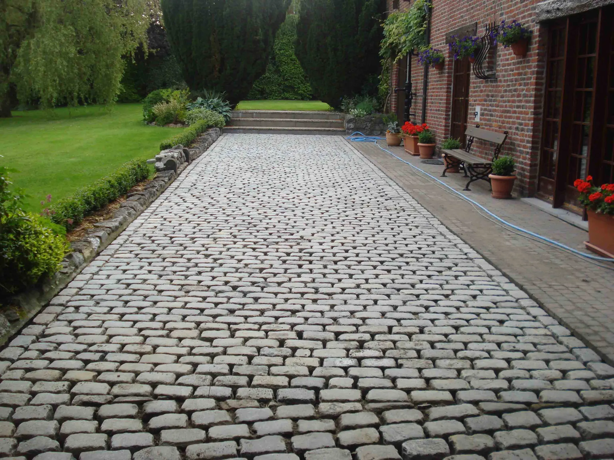
Allées, terrasses et jardins, de la terre au dernier pavé.
Entreprise agréée d'aménagement de parcs et jardins, créée en 1999 et installée à Chastrès (Walcourt). Une équipe de dix personnes sur chantier, du terrassement à la plantation.
- Créée en 1999, province de Namur
- Devis gratuit, détaillé poste par poste
- Plantes garanties un an
- Particuliers et entreprises
Un seul interlocuteur pour tout l'extérieur.
Plan par un architecte paysagiste, gros travaux de terre, pose des matériaux, plantations : chaque étape est faite par la même équipe.
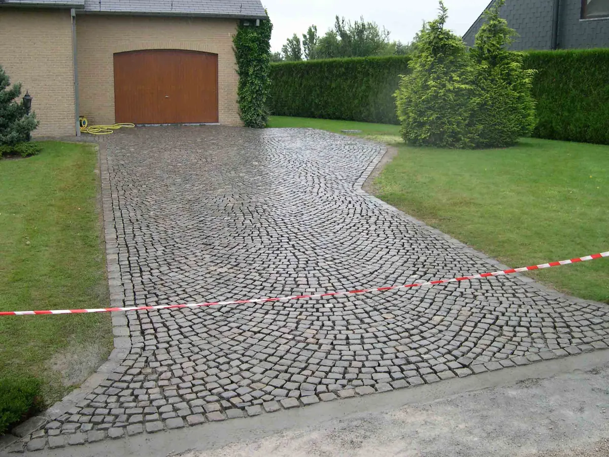
Terrasses, allées et parkings
Une terrasse se dessine selon le soleil, les vues et le nombre de personnes. Pour une allée ou un parking, on prévoit l'espace de manœuvre et des matériaux qui s'accordent à la façade.
- Terrasses en pierre naturelle, klinkers, carrelage ou bois
- Accès en pavés, klinkers, pierrailles ou dolomie
- Bordures, murets et escaliers extérieurs
- Parkings végétalisés
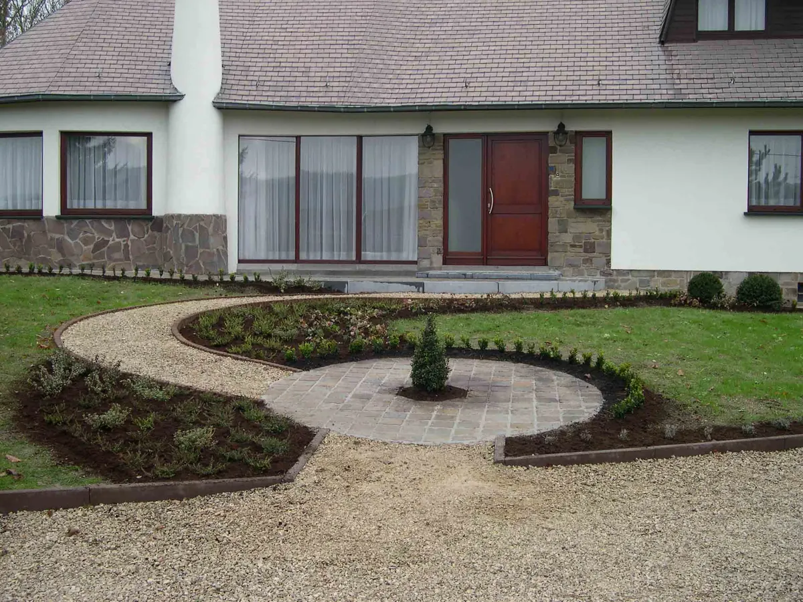
Jardins et plantations
Le plan de plantation harmonise volumes, couleurs et floraisons. Le sol est préparé pour chaque type de plante, pour une bonne reprise.
- Étude et création de jardins
- Plan par un architecte paysagiste
- Plantations
- Gazon semé ou en rouleaux
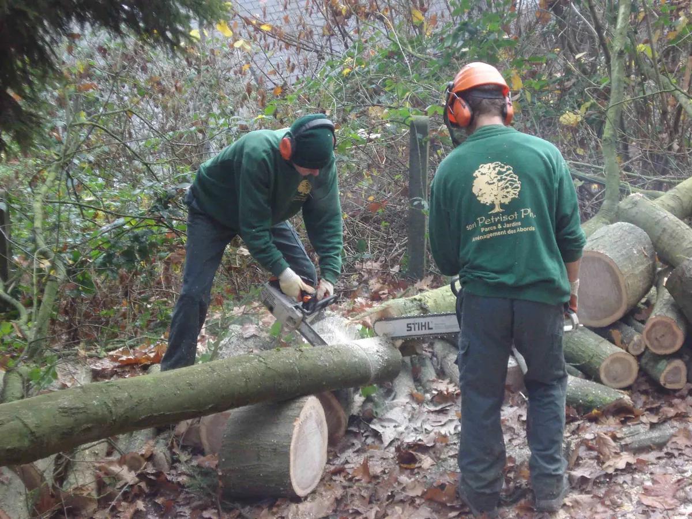
Terrassement, abattage et clôtures
Un bon terrassement demande de bien évaluer les volumes à déplacer et de choisir la bonne machine. On s'en occupe, jusqu'à l'évacuation des terres.
- Terrassement, nivellement, évacuation des terres
- Abattage d'arbres et élagage
- Broyage des déchets verts
- Clôtures et portails
Quelques chantiers terminés.
Photos de chantiers réalisés par l'équipe : pavage, clôtures, pelouses, murs de soutènement, taille et abattage.
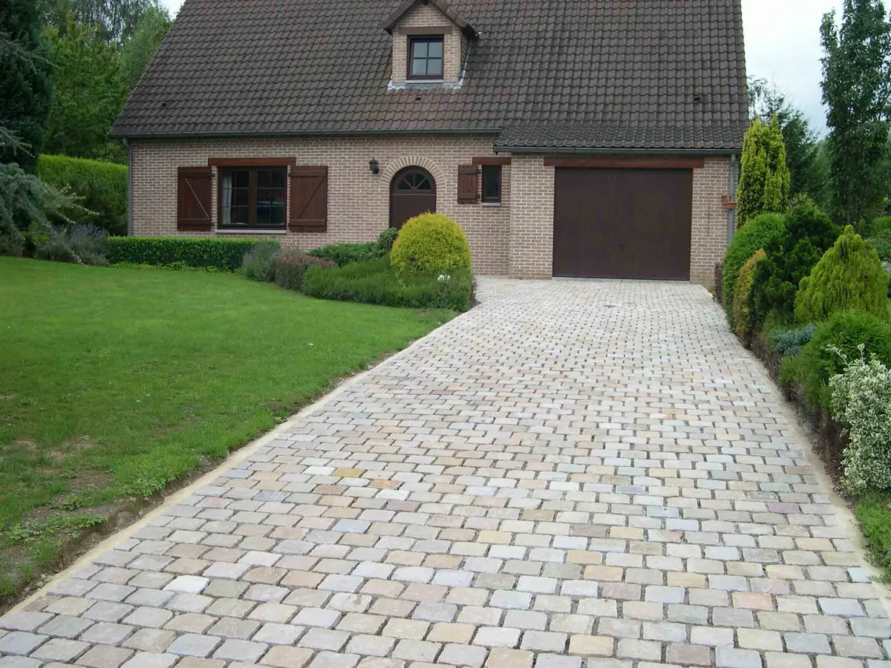
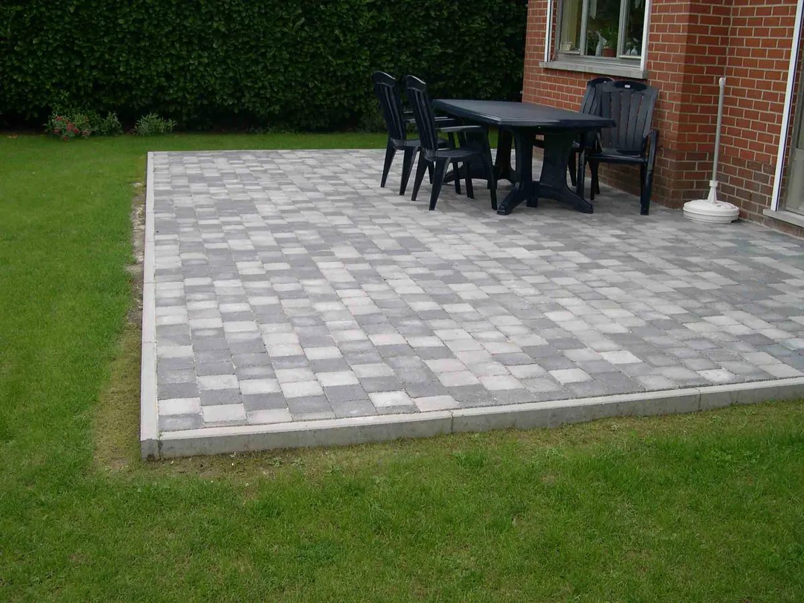
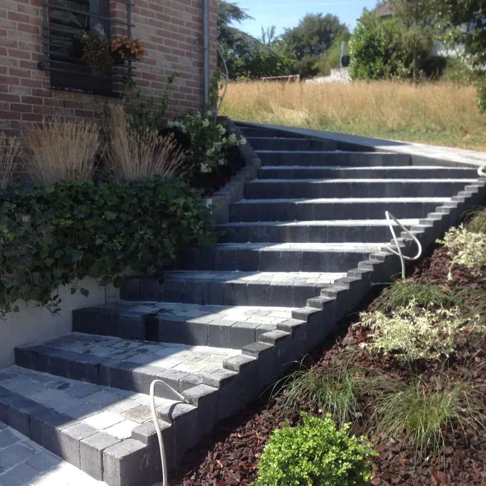
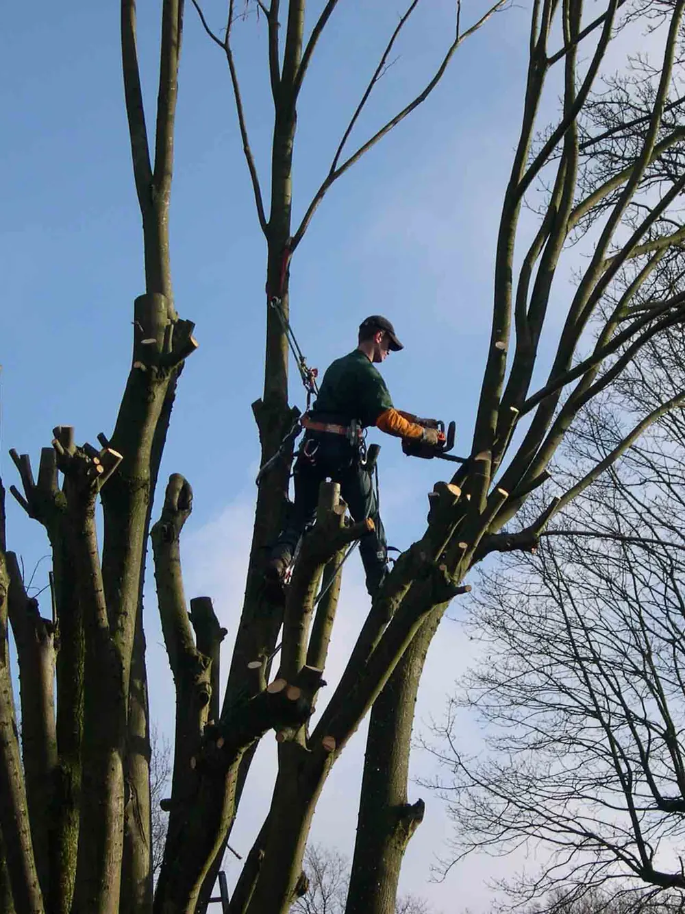
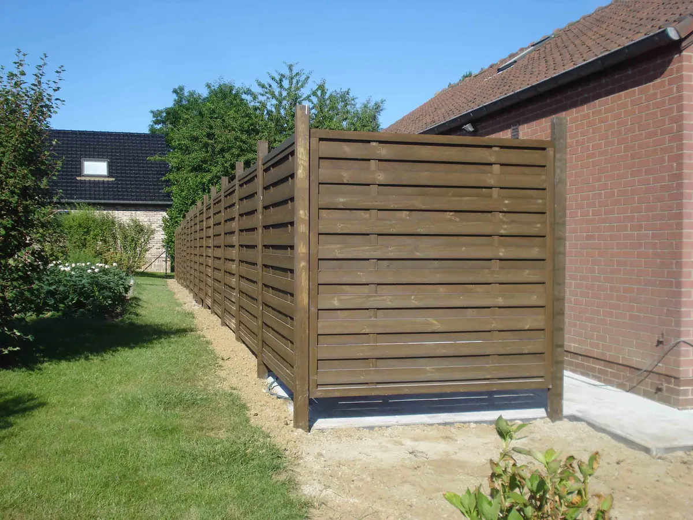
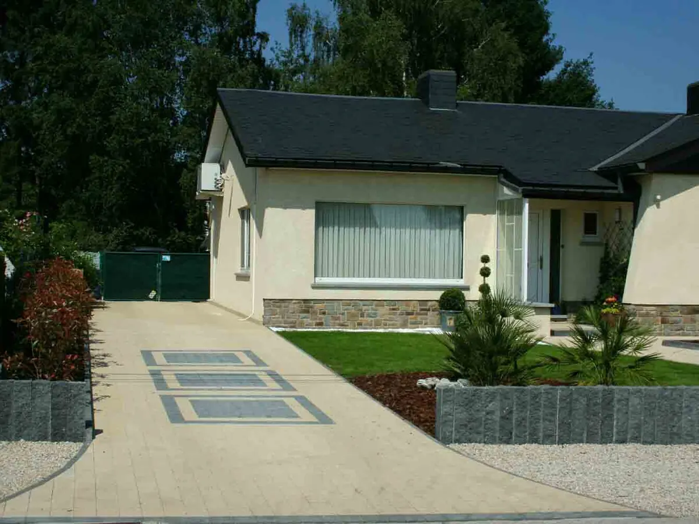
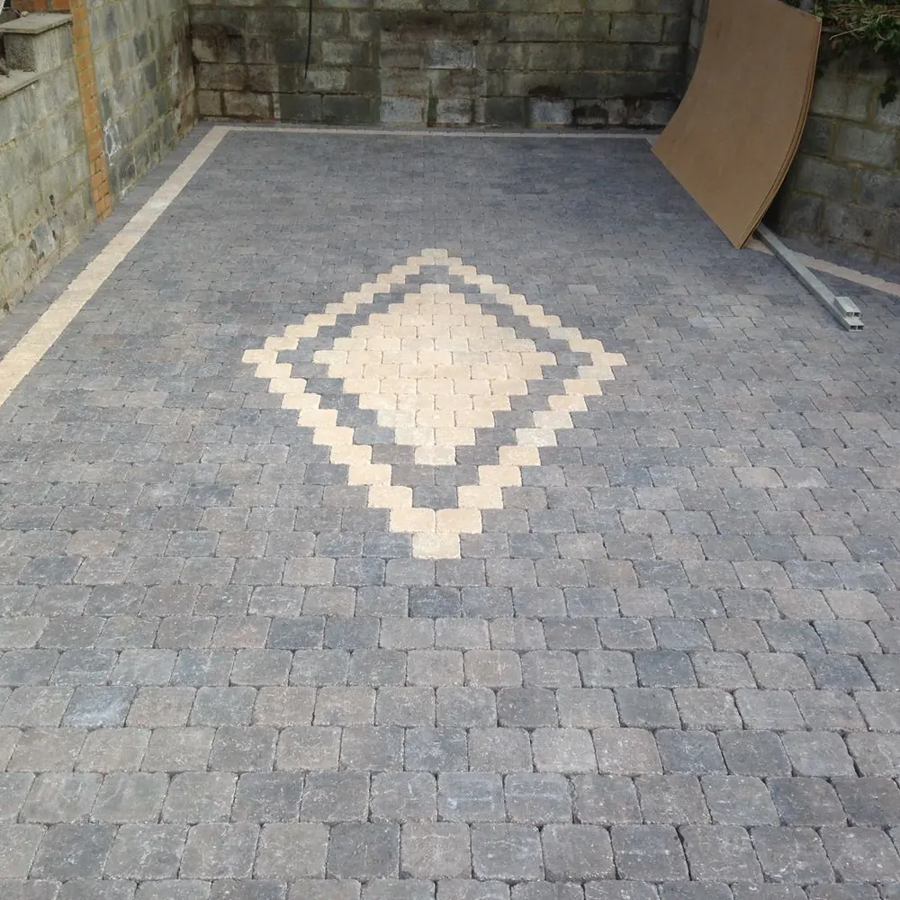
Comment se passe un chantier.
Le devis est toujours gratuit. Il vous sert à fixer votre budget et vos priorités avant le premier coup de pelle.
On se rencontre sur place
Visite du terrain : style, fonctions (terrasse, jeux, chemins, pièce d'eau), vues et ambiance.
Devis détaillé par poste
Établi dans les plus brefs délais, avec le plan d'aménagement, les matériaux et les végétaux.
Travaux suivis
Dès l'accord, les travaux suivent les délais prévus. Des réunions de chantier vous tiennent au courant.
Un an de garantie
Toutes les plantes sont garanties un an. Il ne vous reste qu'à profiter du jardin.
Parlons de votre projet.
SPRL Petrisot Ph.Allée des Linaires 7, zoning industriel
5650 Chastrès (Walcourt)
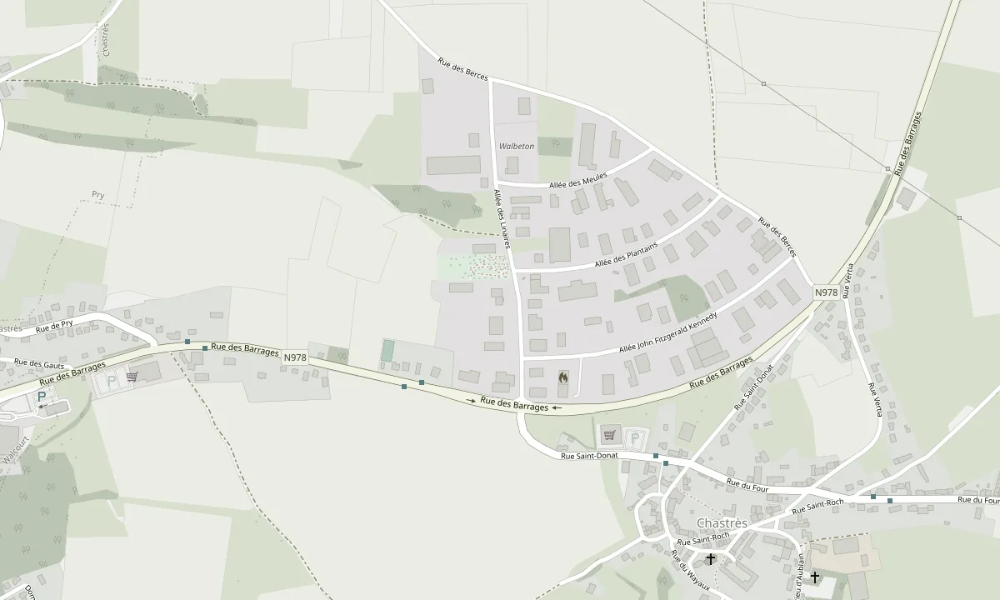
Itinéraire © OpenStreetMap